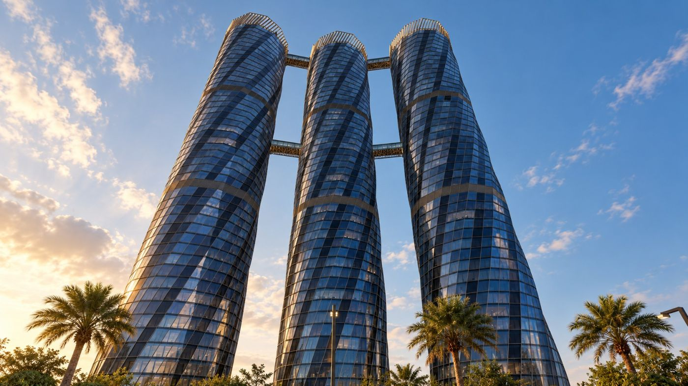
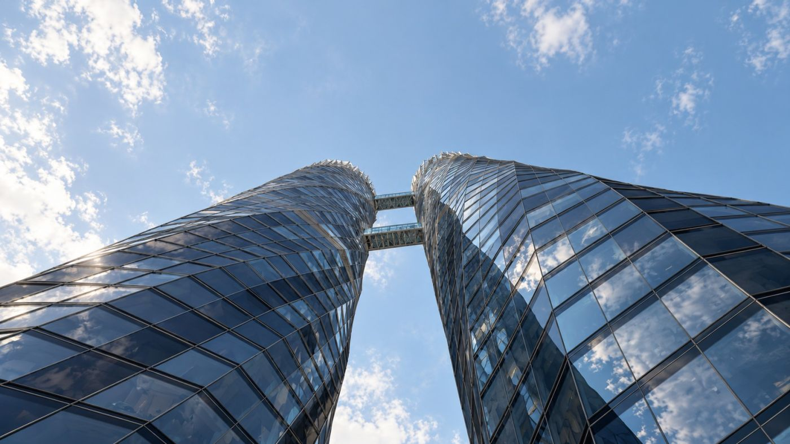

How it will look
The project film
A day in the towers
From sunset to night






These images are AI-assisted renders of the team’s SketchUp model. They are illustrative, and the SketchUp model is the design reference.
Each tower is 200 m tall and turns half a circle between the ground and the roof. This site shows how the structure makes that possible.
Senior design project, Department of Civil Engineering, University of Bahrain
Three identical mixed-use towers stand in a shallow arc on the Bahrain Bay waterfront in Manama. Steel sky bridges join them at Level 31 and at the roof.
The floors rotate, but the structure does not. A straight concrete core and 20 vertical columns run the full height, and each 12-sided floor plate turns 3.6° on top of the one below.
Drag to rotate and pinch to zoom. Switch to the structure to take the glass off and see what holds the towers up.
The model is at 1:200, about 1.1 m tall in your room. The structure model is built from the report dimensions, and its pile positions are schematic.
Design wind pushes the roof 494 mm sideways. The limit is 500 mm, which is the height divided by 400. The steel belt at Story 20 helps keep it inside the limit.
The shape of the sway is the ETABS wind displacement at every story (494.42 mm along the bridges, 439.65 mm across). It moves at the towers’ first-mode period, 9.08 s and 8.55 s. The three towers are drawn slightly out of step, as gusts would make them, to show the roller working.
The core climbs first. Each floor follows, turned 3.6° from the one below, and the glass comes after. The bridges are lifted into place last.
This is an illustration of the sequence, not a construction schedule. A story-by-story construction analysis is listed in the report as future work.
This is the base of a perimeter column at its real size: 1.2 m on each side, designed for about 40,000 kN, roughly the weight of 4,000 tonnes.
The lower part shows the finished concrete. Above it the concrete is left off, so you can see the 32 bars of 50 mm diameter and the ties that hold them.
In AR the column appears 1.2 m wide and 2.4 m tall. Bar couplers and dowels are not drawn.
Each brace is a 356 mm steel pipe that carries only push and pull. A 30 mm knife plate passes through the pipe and bolts to a gusset. Ten M36 bolts run through the full 1 m column to a plate on the far side, so tension never relies on pulling concrete out. The busiest part works at 87.5% of its strength.
Each 15 m bridge is three steel trusses under a concrete deck. One end is pinned to a tower and the other sits on rollers, so the towers do not push and pull each other when they sway. All 193 members pass, and the most loaded one works at 0.83 of its strength.
The blue bar is the result. The red mark at the end is the limit.
The main members were designed again by hand and compared with the software.
| Member | Difference |
|---|---|
| Column C2 base load, against ETABS | 0.52% |
| Column C2 design values | About 1% |
| Core wall pier P3, against ETABS | Within 5% |
| Floor tendon strip, against RAM Concept | Same 4 strands |
| Pile capacity, against PLAXIS 3D | 4.34% |
| Raft bending, against SAFE | Within 5% |
The report lists the work a final design would still need.
| Wind-tunnel test of the three towers together |
| Footfall check of the sky bridges for comfort |
| Column and core shortening over the height |
| Construction analysis following the rotating floors |
| Cost estimate, services coordination and a 4D model |
Software used: ETABS, RAM Concept, IDEA StatiCa, PLAXIS 3D and SAFE. Codes: ASCE 7-16, ACI 318-19 and AISC 360-16.
The design follows Bahrain’s green building rules and supports Economic Vision 2030 and the national target of 20% renewable power by 2035.
The twist changes which way each floor faces the sun, and the 12-sided plate needs about 10% less façade than a square of the same area.
Double-glazed solar-control glass, with outside shading on the most exposed sides.
Solar panels in the façade bands, over the 624-space car park, and in the glass roof of the Sky Garden Walk.
Graywater reuse, air-conditioning condensate for irrigation, and post-tensioned floors that use less concrete.
Connection to district cooling, with plant on Levels 20 and 35, close to the floors it serves.
The Sky Gallery at Level 31 shows Bahrain’s pearling heritage and local artists, and the roof walk is open to visitors.


These images are AI-assisted renders of the team’s SketchUp model. They are illustrative, and the SketchUp model is the design reference.
Supervised by Dr. Muhammad Ajmal
Senior Design Project, CENG495
B.Sc. in Civil Engineering
College of Engineering, University of Bahrain
The structural concept, modelling, analysis, design and detailing are the team’s own work. The 3D and AR models and this website were developed with AI assistance, as declared in the report.